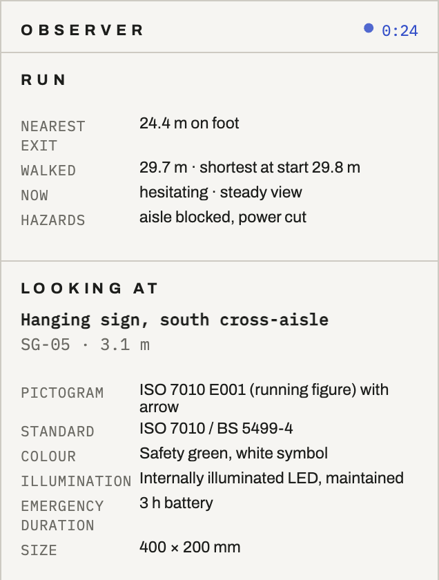

Factory egress · the signs
On screen, facing you, nothing in between, and enough light and clear air for its type.
Within its rated distance: Z factor × sign height, 200 for lit signs and 100 otherwise.
Held within 3° of the centre of view for a quarter of a second, view steady.
Within 4 s, moved the way it points, or towards its door.

Visual Vibes · factory egress · Observer mode, live